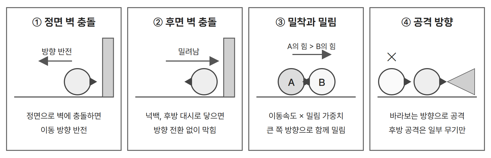

기본 전투 규칙과 무기
● 자동 전진, 자동 공격
- 캐릭터는 바라보는 방향(facing)으로 일정한 속도로 자동 이동하며 기본 공격을 반복한다.
- 플레이어는 이동과 공격 대신 방향전환, 대시, 스킬의 사용 시점을 고른다. 기본 사용 횟수는 라운드당 1회이며 라운드마다 다시 채워진다.
- 4인 매치에서 매 라운드 1:1로 대전한다. 위치 싸움은 아래 네 가지 규칙에서 만들어진다.

| 규칙 | 처리 |
|---|---|
| 벽 충돌 | 캐릭터가 정면 방향으로 벽에 충돌하면 이동 방향이 반전된다. 넉백이나 후방 대시로 캐릭터 후면이 벽에 닿으면 방향 전환 없이 벽에 막힌다. |
| 공격 판정 | - 별도의 사거리 스탯 대신 실제 무기 리소스와 공격 모션에 설정된 히트박스를 기준으로 명중 여부를 판정한다. - 원거리 무기는 투사체의 충돌 또는 무기별 고유 공격 방식에 따라 판정한다. - 일반 투사체는 맵 끝까지 날아가며 벽이나 적에게 닿으면 소멸한다. 표창의 벽 반사는 예외다. |
| 후방 공격 | - 기본 공격은 바라보는 방향으로 발생하므로 등 뒤의 적을 직접 공격할 수 없다. - 다만 표창의 벽 반사, 스태프의 위치 지정 공격처럼 고유 공격 방식이 있는 무기는 후방의 적도 공격할 수 있다. |
| 밀림 | - 두 캐릭터가 정면으로 맞닿으면 서로를 통과하지 않고 밀어낸다. - 각 캐릭터의 이동속도 × 무기별 밀림 가중치를 비교해, 값이 큰 캐릭터의 진행 방향으로 두 캐릭터가 함께 이동한다. - 밀리는 동안에도 공격은 계속된다. |
| 넉백 | - 피격 순간 시전자의 정면 방향으로 점프하듯 밀려나는 일회성 이동이다. - 착지 전까지 이동, 기본 공격, 스킬이 모두 불가하다. 강도는 하(캐릭터 폭 1개, 0.2초), 중(2.5개, 0.5초), 상(4개, 0.8초)이다. |
| 대시, 방향전환 | - 대시는 고정 거리 순간 이동이며 적을 관통하고 facing을 유지한다. - 방향전환은 facing을 즉시 반대로 바꾼다. |
● 무기별 공격 방식과 기본 능력치
- 무기는 기본 능력치와 공격 방식, 넉백 강도, 밀림 가중치, 사용 가능한 무기 스킬을 결정한다.
- 근접 타격, 투사체 발사, 지정 위치 공격 등 무기마다 서로 다른 공격 메커니즘을 갖는다.
- 기본 공격 애니메이션은 MSW에서 제공하는 기본 아바타 모션 구조를 사용한다. 무기별 사용 모션은 아래 표에 지정하며, 스태프는 별도의 기본 공격 모션을 사용하지 않는다.
| 무기 | 공격 계열 | 사용 모션 | 넉백 | 체력 | 공격력 | 공격속도 | 이동속도 | 밀림 가중치 | 특수 메커니즘 |
|---|---|---|---|---|---|---|---|---|---|
| 대검 | 근접 | swingT2 | 중 | 1300 | 115 | 0.8 | 90 | 1.2 | 없음 |
| 망치 | 근접 | swingT3 | 상 | 1200 | 40 ¹ | 0.7 | 80 | 1.6 | 넉백된 적이 착지 전 벽에 닿으면 공격력 2배 추가 피해 |
| 표창 | 원거리 | swingO3 | 없음 | 850 | 90 | 1.0 | 110 | 0.7 | 투사체가 벽에서 1회 반사 |
| 단검 | 근접 | swingO2 | 없음 | 900 | 45 ² | 1.3 | 110 | 0.9 | 적중 3회마다 공격력 +5 |
| 권총 | 원거리 | shoot2 | 하 | 950 | 110 | 0.75 | 100 | 0.85 | 없음 |
| 스태프 | 원거리 | 모션 없음 | 없음 | 800 | 100 | 0.8 | 95 | 0.7 | 적 위치를 타겟팅해 예고 후 낙하 |
| 활 | 원거리 | shoot1 | 없음 | 1000 | 105 | 1.1 | 105 | 0.75 | 없음 |
| 건틀릿 | 근접 | stabO2 | 하 | 850 | 125 | 1.25 | 95 | 1.3 | 없음 |
¹ 망치의 주력 피해는 벽 충돌 추가 피해다. 맵이 좁을수록 강하고 넓을수록 약하도록 설계한다.
² 단검의 시작값이다. 빗나간 공격은 세지 않고, 3회를 채우지 못한 카운트는 라운드 종료 시 초기화되며, 오른 공격력은 매치 내내 상한 없이 유지된다.